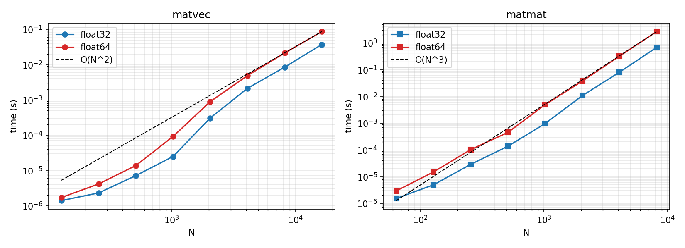
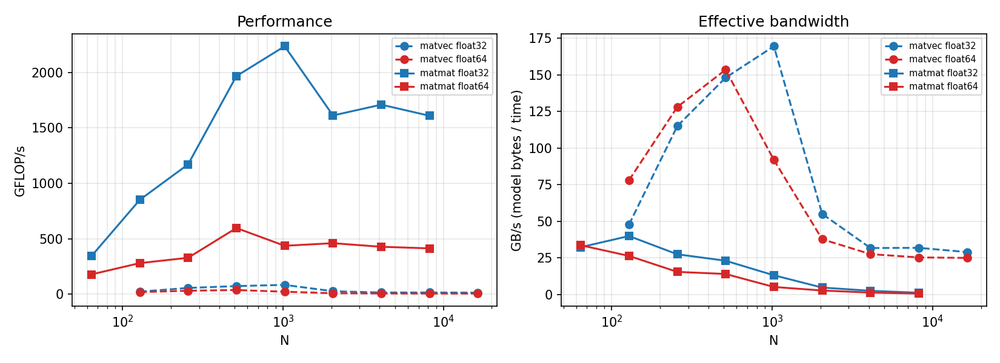
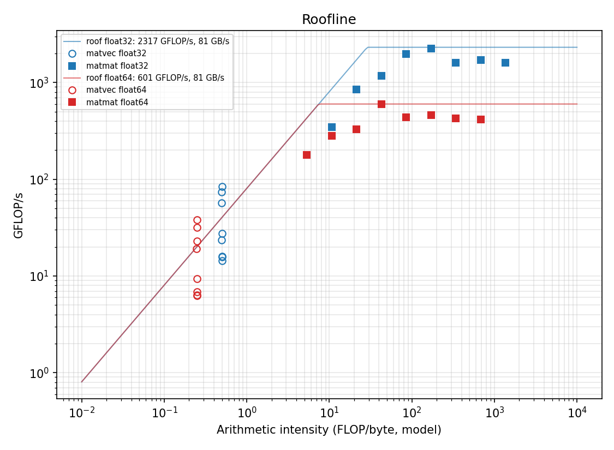
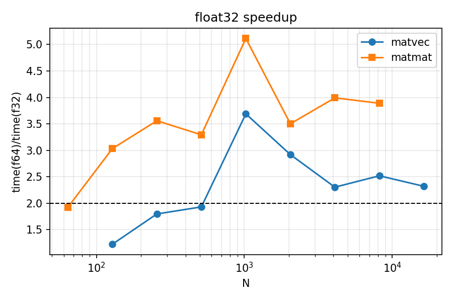

Both operations are implemented with np.matmul writing into preallocated output arrays (out=); inputs are constant-filled (A=1, B=2, x=3) as requested. Allocation and initialisation lie outside the timed region. After two warm-up calls, each sample averages several calls (≥0.2 s of work) and 7 samples are taken per point; the median is reported. Sizes: N=128…16384 (matvec) and N=64…8192 (matmat), for float32 and float64. Machine: Apple M1 Pro, 16 GB, NumPy 2.3.2 linked to Apple Accelerate. Memory-bandwidth roof: STREAM-like triad, ≈81 GB/s. Compute roof per precision: best matmul GFLOP/s observed (float32 ≈2.3 TFLOP/s, float64 ≈0.6 TFLOP/s). Code and scripts: benchmark.py, plot_results.py.
| Operation | FLOPs | Bytes | AI float32 | AI float64 |
|---|---|---|---|---|
| y = Ax | 2N² (N² mul + N(N−1) add) | (N²+2N)s | ≈0.5 | ≈0.25 |
| C = AB | 2N³ | 3N²s | N/6 | N/12 |
Assumptions. Matvec: every element of A is read once and never reused (only x is reused, and it is small and cached); traffic ≈ size of A, so the estimate is almost exact. Matmat: perfect reuse – A and B are read once and C written once, as if the cache were infinite. This is an upper bound on AI: real blocked implementations reload tiles, and C writes may incur write-allocate reads. Hence the model bytes are a lower bound of actual traffic, which we did not measure with hardware counters.
| dtype | N | median time (s) | GFLOP/s | GB/s (model) | AI (FLOP/B) |
|---|---|---|---|---|---|
| object | 128 | 1.395e-06 | 23.5 | 47.7 | 0.49 |
| object | 256 | 2.298e-06 | 57.0 | 115.0 | 0.50 |
| object | 512 | 7.113e-06 | 73.7 | 148.0 | 0.50 |
| object | 1024 | 2.479e-05 | 84.6 | 169.5 | 0.50 |
| object | 2048 | 3.053e-04 | 27.5 | 55.0 | 0.50 |
| object | 4096 | 2.117e-03 | 15.8 | 31.7 | 0.50 |
| object | 8192 | 8.435e-03 | 15.9 | 31.8 | 0.50 |
| object | 16384 | 3.710e-02 | 14.5 | 28.9 | 0.50 |
| object | 128 | 1.707e-06 | 19.2 | 78.0 | 0.25 |
| object | 256 | 4.128e-06 | 31.8 | 128.0 | 0.25 |
| object | 512 | 1.372e-05 | 38.2 | 153.4 | 0.25 |
| object | 1024 | 9.147e-05 | 22.9 | 91.9 | 0.25 |
| object | 2048 | 8.911e-04 | 9.4 | 37.7 | 0.25 |
| object | 4096 | 4.876e-03 | 6.9 | 27.5 | 0.25 |
| object | 8192 | 2.124e-02 | 6.3 | 25.3 | 0.25 |
| object | 16384 | 8.604e-02 | 6.2 | 25.0 | 0.25 |
| dtype | N | median time (s) | GFLOP/s | GB/s (model) | AI (FLOP/B) |
|---|---|---|---|---|---|
| object | 64 | 1.523e-06 | 344.3 | 32.3 | 10.67 |
| object | 128 | 4.928e-06 | 851.1 | 39.9 | 21.33 |
| object | 256 | 2.867e-05 | 1170.6 | 27.4 | 42.67 |
| object | 512 | 1.366e-04 | 1965.7 | 23.0 | 85.33 |
| object | 1024 | 9.608e-04 | 2235.0 | 13.1 | 170.67 |
| object | 2048 | 1.066e-02 | 1611.3 | 4.7 | 341.33 |
| object | 4096 | 8.044e-02 | 1708.5 | 2.5 | 682.67 |
| object | 8192 | 6.835e-01 | 1608.6 | 1.2 | 1365.33 |
| object | 64 | 2.926e-06 | 179.2 | 33.6 | 5.33 |
| object | 128 | 1.494e-05 | 280.8 | 26.3 | 10.67 |
| object | 256 | 1.020e-04 | 328.9 | 15.4 | 21.33 |
| object | 512 | 4.498e-04 | 596.8 | 14.0 | 42.67 |
| object | 1024 | 4.914e-03 | 437.0 | 5.1 | 85.33 |
| object | 2048 | 3.733e-02 | 460.3 | 2.7 | 170.67 |
| object | 4096 | 3.211e-01 | 428.0 | 1.3 | 341.33 |
| object | 8192 | 2.659e+00 | 413.6 | 0.6 | 682.67 |

Fig. 1 – Execution time vs N with O(N²)/O(N³) reference.

Fig. 2 – GFLOP/s and effective bandwidth (model bytes / time).

Fig. 3 – Roofline with measured points.

Fig. 4 – float64/float32 time ratio.
Matvec has AI 0.25–0.5 FLOP/B, far left of the ridge point (≈7 FLOP/B in float64, ≈29 in float32): it is memory-bound. For N≥2048 its performance is almost independent of N (6–7 GFLOP/s float64, 14–16 float32), equal to AI × bandwidth, and it reaches only 30–40 % of the triad bandwidth (25–32 vs 81 GB/s), i.e. it does not hit the roof. For N≤1024 the matrix fits in cache, so points lie above the DRAM roof (up to 169 GB/s): the DRAM roof does not apply to cache-resident data.
Matmat has AI ≥5 (float64) and growing ∝ N, well beyond the ridge point once N>~64: it is compute-bound and reaches 70–95 % of the best observed peak (0.41–0.60 TFLOP/s float64, 1.6–2.2 TFLOP/s float32). Its effective GB/s falls with N (down to 0.6–1.2 GB/s at N=8192) because data reuse makes the actual traffic per FLOP tiny: the kernel is limited by arithmetic units, not memory.
Data reuse. In matvec each loaded byte supports ~1 FLOP; in matmat each element of A and B is used O(N) times from registers/cache, so AI grows linearly with N. This is the only reason matmat can approach the compute roof.
1. Scaling with N. Matvec time grows as N² (about 4× per doubling for N≥2048: 2.1→8.4→37 ms in float32) and matmat as N³ (about 8×: 80→684 ms float32 from N=4096 to 8192), as expected from the FLOP counts (and, for matvec, from the bytes moved). At small N, call overhead (µs) and cache effects break the pure power law; the matvec slope is also steeper than 2 between N=1024 and 2048, when A leaves the cache (float32: 85→27 GFLOP/s).
2. Matvec vs matmat. Matmat reaches ~100–300× more GFLOP/s (e.g. 1.7 TFLOP/s vs 16 GFLOP/s in float32 at N=4096) because its AI is O(N) versus O(1) for matvec: matvec performance = AI×bandwidth, matmat performance = compute peak.
3. float64 → float32. Matvec is ≈2.3× faster at large N: half the bytes per element halve the traffic (2×), and AI doubles (0.25→0.5), so GFLOP/s doubles at equal bandwidth. Matmat is ≈3.9–4× faster (321 vs 80 ms at N=4096), more than the 2× expected from SIMD width, so the float32 path of the library is evidently better optimised than its float64 path on this chip (the compute roofs differ by 3.9×). The expected benefit is therefore observed, and exceeded.
4. Unexpected results / deviations. (a) Matvec is far from the bandwidth roof (30–40 %): GEMV seems unable to saturate DRAM here (likely limited threading/streaming in the library; not verified). (b) Matvec points above the roof at N≤1024 are cache effects, not violations. (c) Matmat performance peaks around N=512–1024 and drops ~25 % for larger N (cache blocking/working-set effects, possibly power/thermal limits; not verified). (d) The compute roofs are empirical, so by construction no point exceeds them. (e) Effective GB/s uses model bytes, not hardware-counter traffic, so for matmat it underestimates the real traffic. (f) A single machine, run once, with background load possible: run-to-run variation of ~10 % should be assumed.